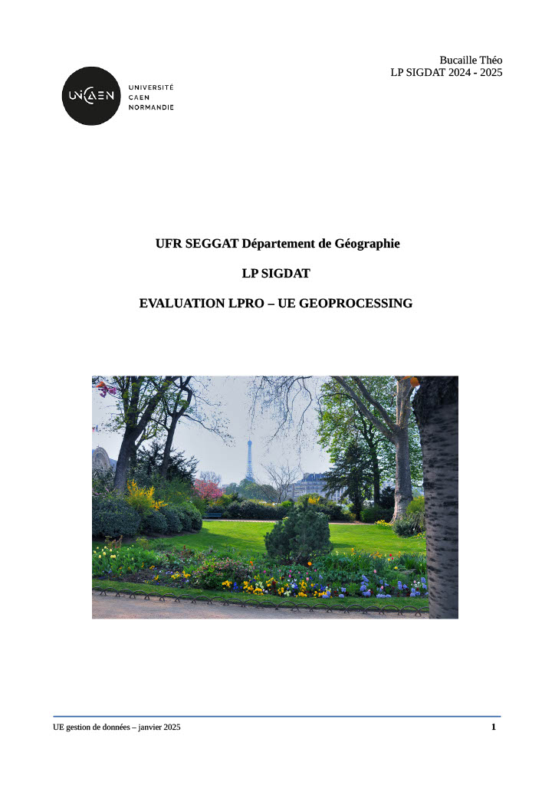
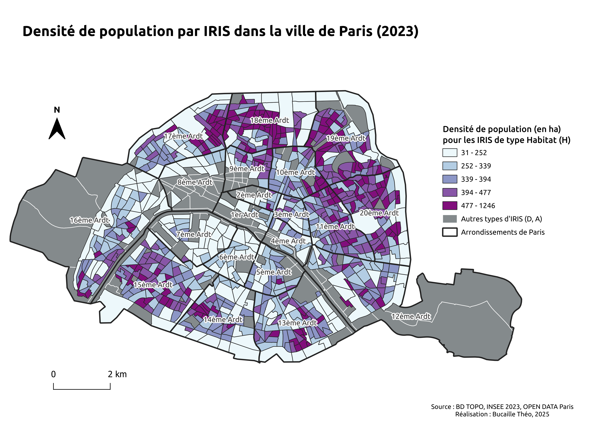
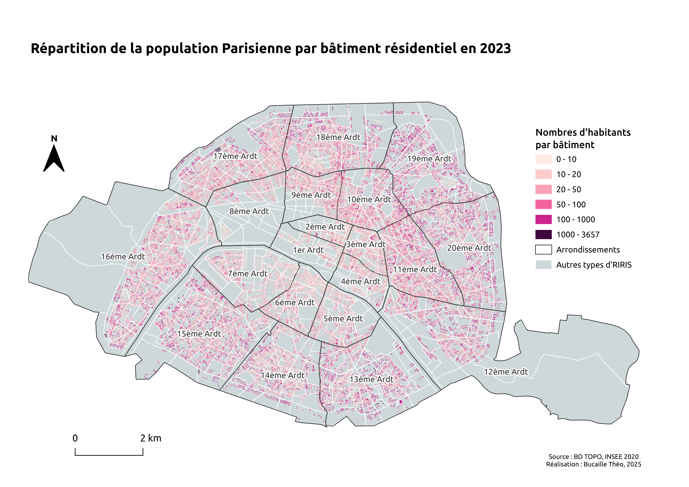
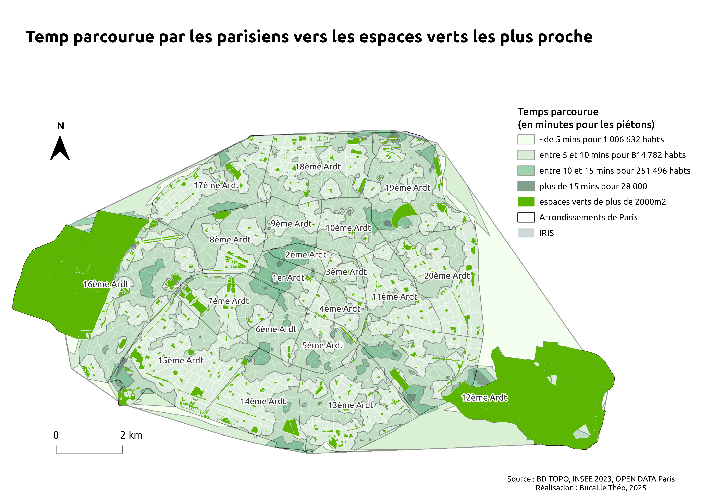
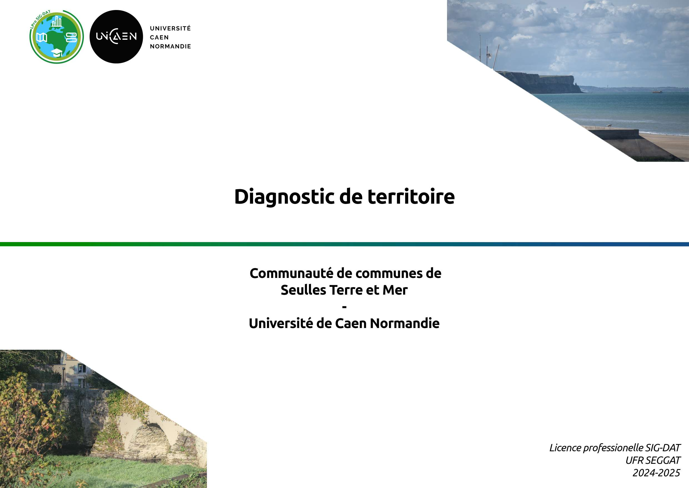
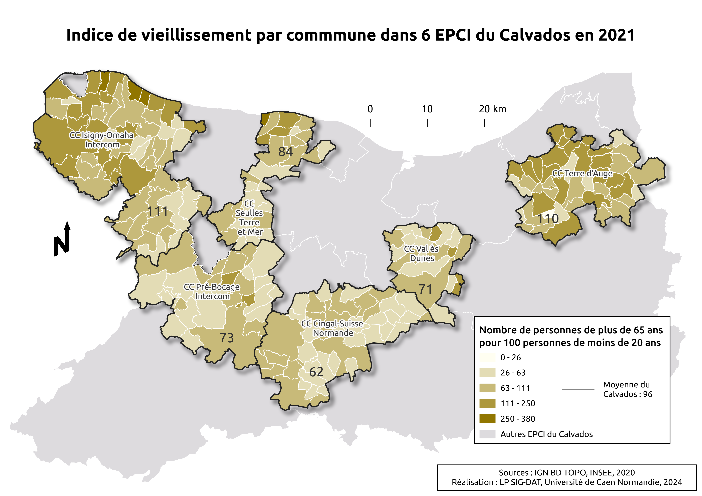
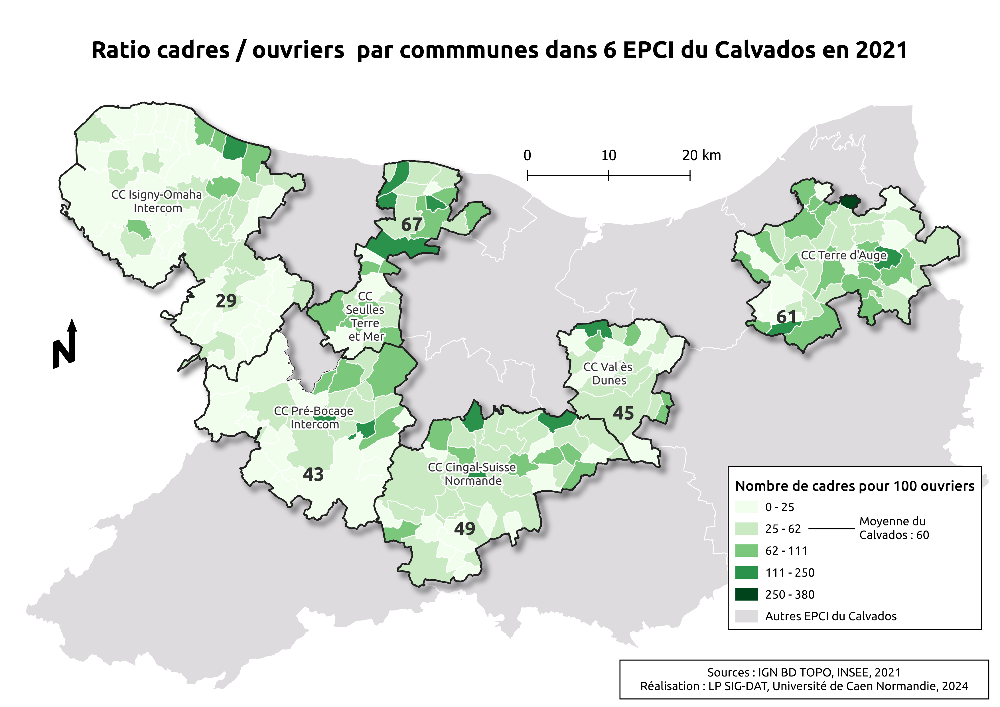

Bienvenue sur mon portfolio !
Bienvenue dans mon univers géographique ! Actuellement en Master 1 SIGAT à l’université de Rennes 2, je plonge chaque jour un peu plus dans l’univers de la géomatique.
Si toi aussi tu aimes les cartes, l’aménagement du territoire ou simplement découvrir le monde autrement, alors bienvenue ! Je t’invite à jeter un œil à quelques-unes de mes réalisations ci-dessous.
À très vite pour échanger sur ce beau voyage à travers l'espace et les données ! 🌎
Mes Productions
×






Incendies de forêts en France (2010 - 2023) : Une menace croissante / Analyse des causes, impacts et prévention avec un focus sur la région Provence-Alpes-Côte d'Azur - Lpro
Infographies et posters

Diagnostic de territoire Communauté de communes Seulles Terre & Mer 📖 - Lpro
Diagnostic de territoire






Détection des écotones avec LIDAR 📖 - Lpro
Programmation R
Un lien étroit entre logement étudiant et situation familiale ? 📖 - L2
Terrain et techniques d'enquêtes
Enquête avec des entretiens sur le logement étudiant 📖 - L2
Terrain et techniques d'enquêtes
Analyse film 📖 - L2
Dossier photographique